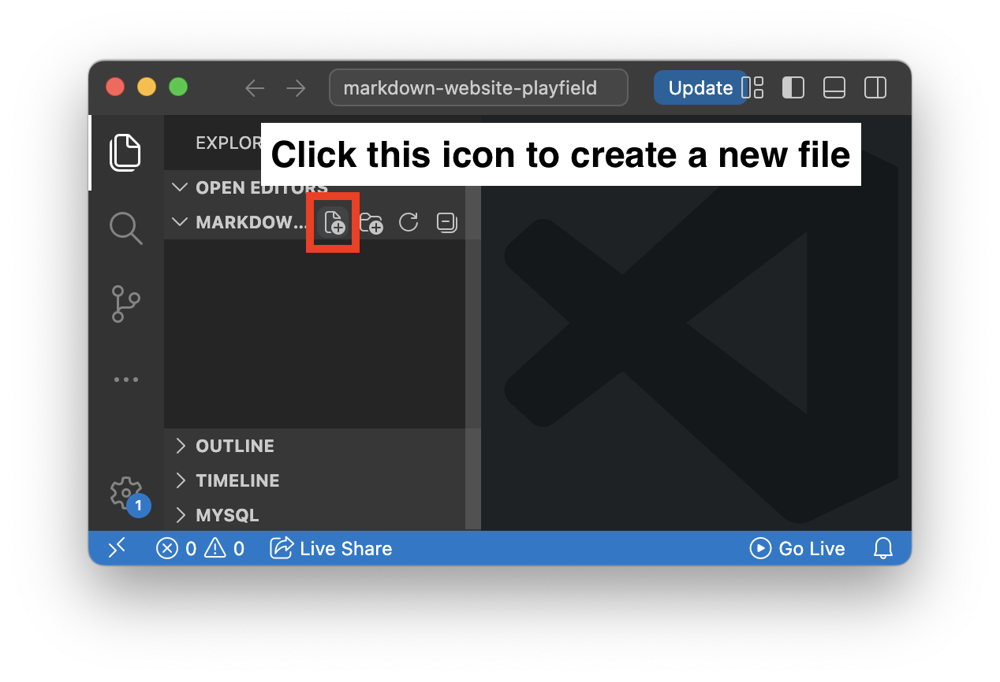
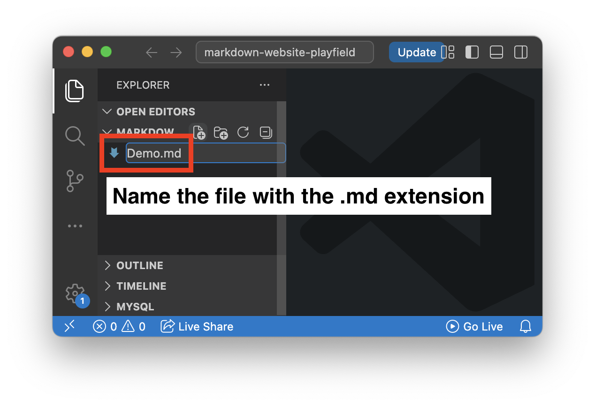
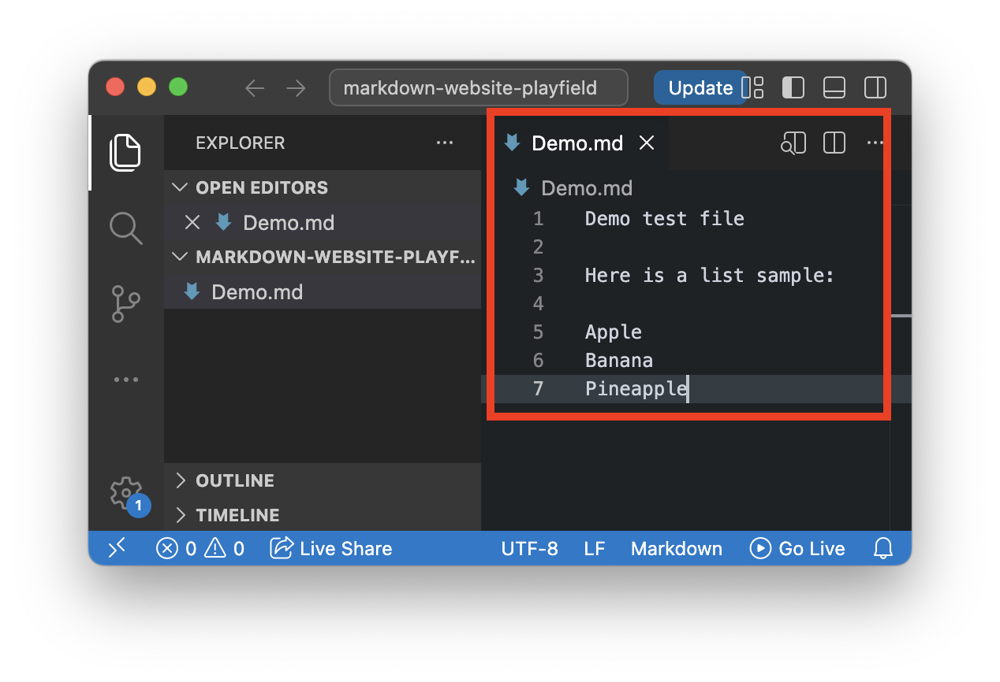
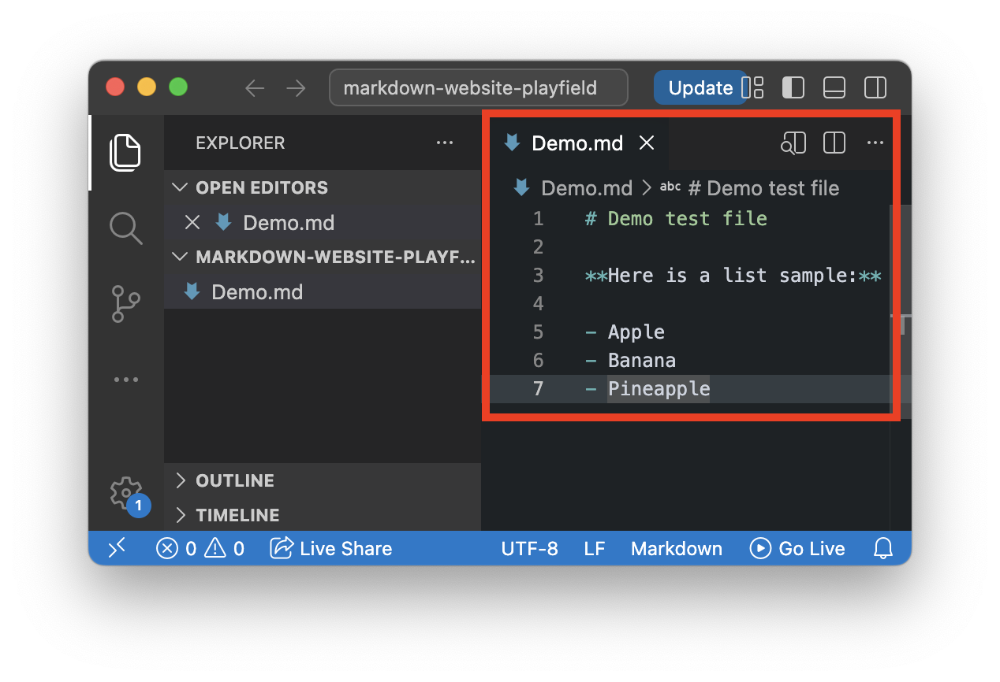
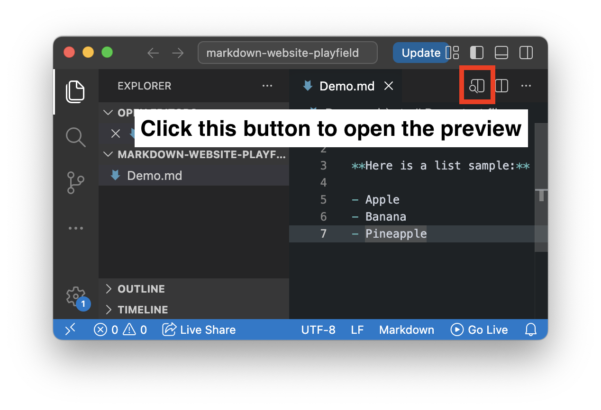
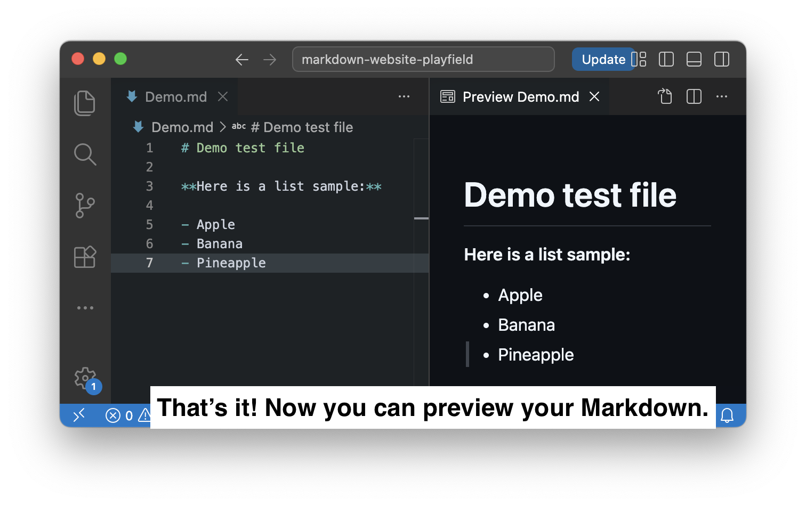
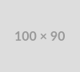

It's fast to write
Instead of clicking toolbar buttons or writing long HTML tags, you add a symbol and keep typing. A
# makes a heading, ** makes text bold, and your hands never leave the
keyboard.
Markdown is a lightweight markup language for creating formatted text in a plain-text editor.
A markup language is a system used to annotate text in a digital document. It uses tags or symbols to define the document's structure, formatting, or data relationships, telling computers how to interpret, display, or organize the content rather than executing logical operations.
Common markup languages used today are:
h1 for headings).# or *.There are three general categories of electronic markup, articulated by James Coombs, Allen Renear, and Steven DeRose in 1987, and Tim Bray in 2003.
Markdown is a lightweight markup language that
uses simple symbols like #, *, and
- to format text. It was created in 2004 by
John Gruber and Aaron Swartz to make writing for
the web as easy as writing plain text.
The original specification was delibrately loose and informal. This made it easy to learn, but it also meant different platforms interpreted Markdown differently — leading to multiple "flavors" (GitHub Flavored, Reddit, Stack Overflow, etc.).
| Element | Syntax | Result |
|---|---|---|
| # | # Heading 1 | Heading 1 |
| ## | ## Heading 2 | Heading 2 |
| * | *Italic* | Italic |
| ** | **Bold** | Bold |
| - | - List item |
|
| [ title ](URL) | [Markdown Guide](https://www.markdownguide.org/cheat-sheet/) | Markdown Guide |
|  |  |

|
| ` | `Inline code` |
|
Markdown lets you format plain text using simple symbols.
With Markdown, you can create headings, lists, links, images, bold or italic text, code blocks, and tables without writing complex HTML.
It keeps your writing easy to read in its raw form while allowing it to become clean, structured content.
Let's compare Markdown and HTML using the sample images to see how simple and easy Markdown is to read.
Here is a sample of Markdown. As you can see, the raw Markdown and the rendered result contain the same information.

Here is a sample of HTML. Since HTML uses text for tag names as well, you can see that it is not as easy to read as Markdown or plain text.

Using Markdown is simple: write your content in plain text, add Markdown symbols to show structure, and preview or convert it into formatted content.
For example, # creates a heading, **text** creates
bold text, and - item creates a list item. A Markdown parser
reads these symbols and renders them as structured HTML.
Below, we will walk through how to write Markdown in Visual Studio Code and preview the result step by step.
Open Visual Studio Code and create a new file with the
.md extension, such as Demo.md.


Start by typing your content normally, just like writing notes or a simple document.

Use simple symbols to structure the content. For example, # creates a heading, **text** creates bold text, and - item creates a bullet list.

In Visual Studio Code, right-click inside the Markdown file and select Open Preview. You can also use Open Preview to the Side to see the Markdown and the rendered result side by side.

The Markdown file remains readable as plain text, while the preview shows how it will look when rendered.

Markdown is worth learning because it's simple, portable, and widely supported. Once you know it, you can find many reasons to use it!
Here are some of the main reasons people choose Markdown:
Instead of clicking toolbar buttons or writing long HTML tags, you add a symbol and keep typing. A
# makes a heading, ** makes text bold, and your hands never leave the
keyboard.
Unlike HTML, raw Markdown still looks close to the finished result. A list written with -
dashes looks like a list, and a heading with # stands out clearly.
A .md file can be opened on any device, with any text editor, today or twenty years from
now. There's no risk of a file becoming unreadable because software changed.
Because Markdown is plain text, tools like Git can show you exactly what changed line by line, something that isn't easy with Word documents or PDFs.
GitHub, Reddit, Notion, Slack, Discord, and many other platforms all support Markdown or a version of it.
Markdown gives you clean, readable formatting without getting in the way of your writing.
You can use Markdown in many places!
Well, not literally everywhere, but more often than you might think.
For example, have you ever made text bold in Slack? That kind of simple formatting is similar to Markdown.
Basic Markdown lets you create simple elements like headings, lists, links, images, and bold or italic text. However, it does not let you do everything. For example, pure Markdown cannot change text color.
As mentioned in the “What Is It?” section, different platforms may interpret Markdown differently or add their own extra features. These versions are often called Markdown “flavors.”
That is why Markdown may look slightly different depending on where you use it.
Let's look at some common places where Markdown or Markdown-like syntax is used.
Here is a sample from Slack. Can you guess how many formatting features this post uses?

It uses four features. Let's check them out.
First, it uses @channel.
This sends a notification to everyone in the channel, so it is
useful when you need to share an important message with the
whole group.
Next, it mentions
@Michael Chow (Instructor).
This sends a notification to a specific person and makes it
clear who the message is directed to.
The bold text, gbads, may
already look familiar to you. Slack uses simple symbols to make
text bold, similar to Markdown.
Lastly, it includes an animated icon or emoji using codes like
:gabs:. This is not part of
basic Markdown, but it shows how tools like Slack add their own
extra features on top of simple text formatting.
Here is another sample from Swagger UI.
Swagger UI is a tool that turns API specifications into interactive documentation. Developers can use it to explain API endpoints, request formats, and responses in a readable way.
You can also use Markdown syntax in API description files to make the documentation easier to read.
For example, the image below shows examples of
bold text and
italic text written with
Markdown syntax.

For this sample, we use YAML because it is easier to write and read. JSON files can also be used, but YAML is more convenient here because it requires less escaping, especially when writing Markdown syntax.
| Pros 👍🏻 | Cons 👎🏻 |
|---|---|
| Learn the basics in under 10 minutes | Different platforms support different features |
| Write without taking hands off the keyboard | No way to center images or change text color |
| Files open on any device, now or in 20 years | Tables and footnotes are awkward to write |
| See exactly what changed when using Git | Must convert to PDF/HTML to share with non-technical people |
| Used everywhere: GitHub, Reddit, Notion, Slack | Original loose spec led to incompatible "flavors" |
The last con - incompatible "flavors" - is why CommonMark was created in 2014.
Use the preview website to help you answer the questions below.
Question: Which of the following correctly creates bold text?
[bold text]//bold text//**bold text**<b>bold text</b>Answer: C. **bold text**
Result:
bold text
Question: Which of the following correctly creates italic text?
[italic text]//italic text//*italic text*<i>italic text</i>Answer: C. *italic text*
Result:
italic text
Question: Which heading size is the largest (most prominent)?
# Heading### Heading###### HeadingHeading (no symbols)Answer: A. # Heading
Result:
Question: You want a level 4 heading that says "Brownies." Which is correct?
# Brownies#### BrowniesBrownies ####=== BrowniesAnswer: B. #### Brownies
Result:
Question: Which is the correct syntax for a link?
[text](URL)(URL)text[text]URL<text URL>Answer: A. [text](URL)
Result:
textQuestion: You want a link that says "Click here" and goes to https://brownie.com. which is correct?
(Click here)[https://brownie.com][Click here](https://brownie.com)[Click here]https://brownie.comL<Click here>https://brownie.com</Click here>Answer: A. [Click here](https://brownie.com)
Result:
Click hereQuestion: Which creates an unordered list?
1. item- item*item*# itemAnswer: B. - item
Result:
Question: Which creates an ordered list?
- item+ item1. item* itemAnswer: C. 1. item
Result:
Question: Which is the correct syntax for an image?
[alt text](URL)<img src="URL" alt="alt text" /><alt text>URL</alt text>Answer: A. 
Result:

Question: You want to create a blockquote. Which symbol do you use at the start of the line?
#->`Answer: C. > This is a blockquote
Result:
This is a blockquote